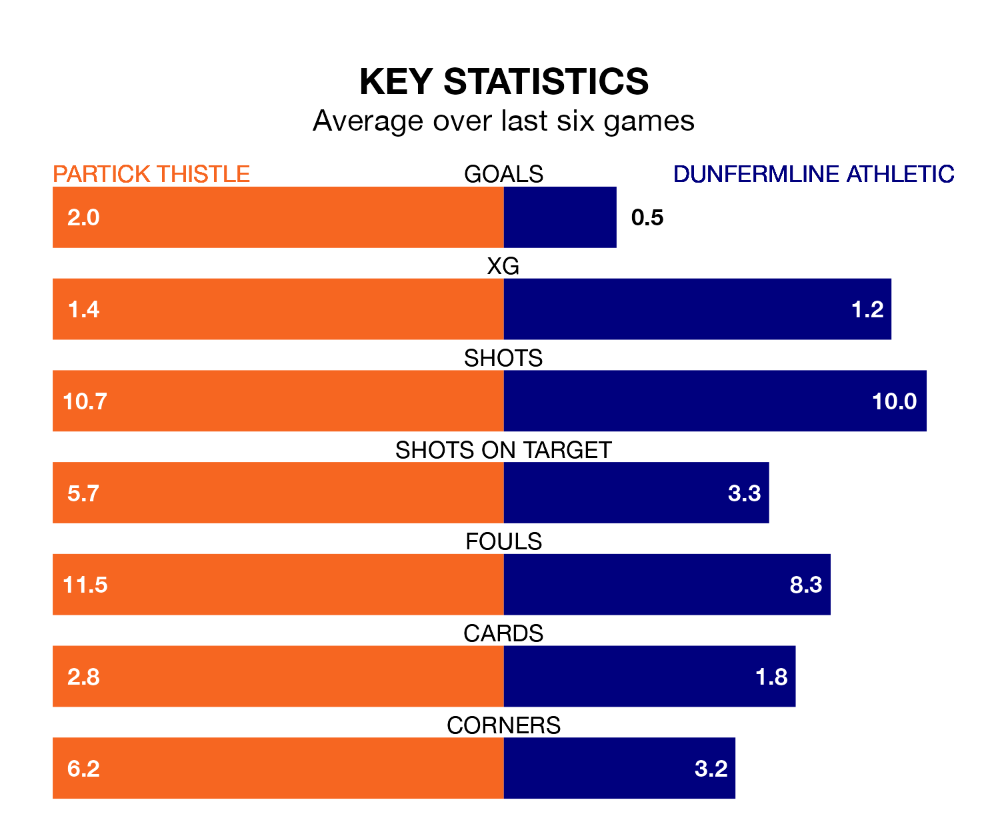

Mid-season relegation candidates Dunfermline Athletic face a challenge away against high-flying Partick Thistle at Wyre Stadium at Firhill on Friday.
Dunfermline Athletic are ninth in the Championship table, and have picked up six wins and seven draws in their 23 games to date.
Thistle, meanwhile, are third in the standings with 38 points, having won 10 and drawn eight, and are 10 points behind table-toppers Dundee United.
With 46 goals in 23 games so far this season, Partick Thistle are the league's joint-highest scorers with 2.0 goals per game. But they are conceding more than average too, letting in 37 goals at a rate of 1.6 per game.
Dunfermline, meanwhile, are below average scorers, with 1.1 goals per game, compared to a league average of 1.4. They have conceded 1.4 goals per game.
In Brian Graham, Thistle have the league's sharpest shooter so far this season. He has notched 12 goals in 21 appearances.
His goal rate of one every 141 minutes is quicker than that of Craig Wighton, Athletic's top scorer with a goal every 219 minutes, and a total of five goals in 19 games.
The home side are in mixed form in the Championship, with two wins and three draws from their last six games.
With no wins and two draws over that period, the visitors' form is much worse – they have taken two points from 18, compared to Partick Thistle's nine.
In the last 10 years, Partick Thistle and Dunfermline have played each other on 16 occasions. They won six each, and they drew four times.
On average, Thistle scored 1.2 goals and Dunfermline 1.6 in those matches.
Their last meeting was on December 16, when Partick Thistle won 2-1 away.
Partick Thistle's last match was on Saturday, a 3-3 draw against Inverness CT, with Graham (two) and Aidan Fitzpatrick getting the goals for Thistle.
Dunfermline drew 1-1 with Arbroath last time out, also on Saturday, with Malachi Walcott on the scoresheet.
Updated: 12:18 (UTC), 19/02/24